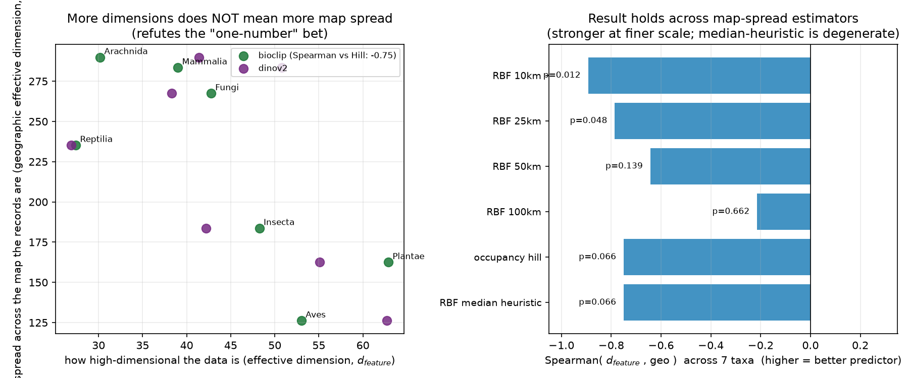
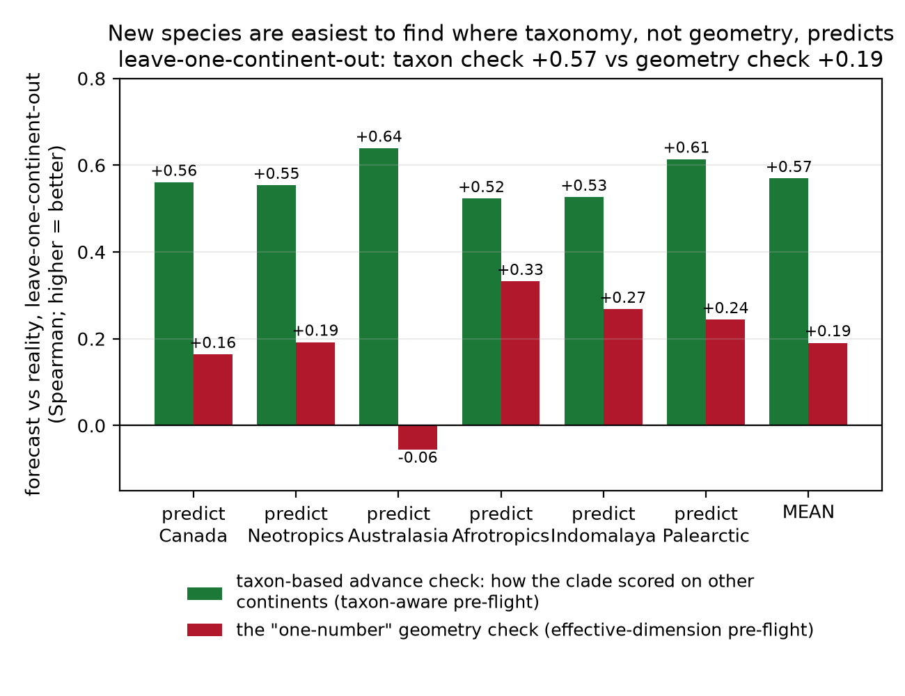

Where to look next
Value-of-information sampling for a continental bioblitz
Wietze Suijker
Species-discovery PhD · the Wallacean paper (Ch. 4)
The other half of discovery: where
Finding which species exist is one shortfall. Knowing where they are is the
other. Where should naturalists be sent so each observation-hour discovers the most?
The score: per map cell, combine observation density, recency, climate-novelty,
sample-coverage completeness, and model disagreement — a value-of-information estimate of what a
cell still hides.
It survives the honest test: a leakage-free backtest
0.49–0.64
priority ↔ actual discovery
rarefied Spearman, p<5e-4
40/40
configurations robust
every density / effort setting tested
Score cells on the past, hide the future, then check: do
high-priority cells out-discover low-priority ones at equal effort? Yes — the priority map
predicts where discovery actually happens.
The honest negative that shapes the whole thesis

The feature-space winner (embedding novelty) does not win geographically. For
covering distinct map cells, spatial coverage beats novelty +77% to +1%; novelty
wins only for species discovery (+20%). Different signal wins in each space.
Why one number can't span both

More embedding dimensions does not mean records spread wider across the map —
the “one-number” bet refuted, and the refutation is robust across every map-spread
estimator. The feature and geographic axes are statistically decoupled (Spearman −0.06).
Two non-redundant axes beat either alone
+21.7%
joint VOI over random
vs feature +15.3%, geographic +2.2% alone
+5.1%
joint over best single axis
strictly better in 24 of 26 cells
The two pre-flights carry independent information. The
pre-flight is irreducibly two-dimensional — and that's a feature, not a bug.
Allocating a real budget
~92%
of an oracle's discoveries
VOI-guided allocation across 30 orders
~87%
uniform allocation
the “spread it evenly” baseline
Guided allocation closes 37–45% of the gap to an
all-knowing oracle (+5–7% over uniform) — on a continent's worth of clades, before a single
new trip.
And you can rank a region you've never sampled

Leave-one-continent-out: a taxon-aware pre-flight forecasts an unseen continent's
per-clade discovery difficulty at +0.57, versus +0.19 for the one-number
geometry. Difficulty travels with the branch of the tree of life, so you can prioritise before arriving.
From backtest to cause: a ladder, not a leap
- Rung 1 (done): the observational leakage-free backtest above.
- Rung 2 (base case): a difference-in-differences across seasons — a real causal advance that doesn't depend on volunteer compliance or a third-party app.
- Rung 3 (upside): a field-randomized bioblitz trial, pursued only if app-modification + ethics sign-off align in time. The causal claim no longer rests on one fragile experiment.
Responsible by construction
- Fine-grained location prediction can aid exploitation of at-risk species. So the live deployment exposes only coarse, species-summed at-risk richness — never an individual locality.
- Species-at-risk exposure masking and CARE/OCAP Indigenous data governance are first-class constraints, not afterthoughts.
- The north-star metric is discoveries per human-hour, evaluated in the open.
Thank you
Where to sample is a value-of-information
question — answerable, leakage-free, and genuinely separate from what to label.
ρ 0.49–0.64 backtest · coverage beats novelty geographically ·
joint VOI +21.7%
Wietze Suijker, wietze.suijker@mila.quebec
Engine:
Wietze Suijker, wietze.suijker@mila.quebec
Engine:
blitz-the-gap ·
evidence reproduces from phd-species-discovery/pilot